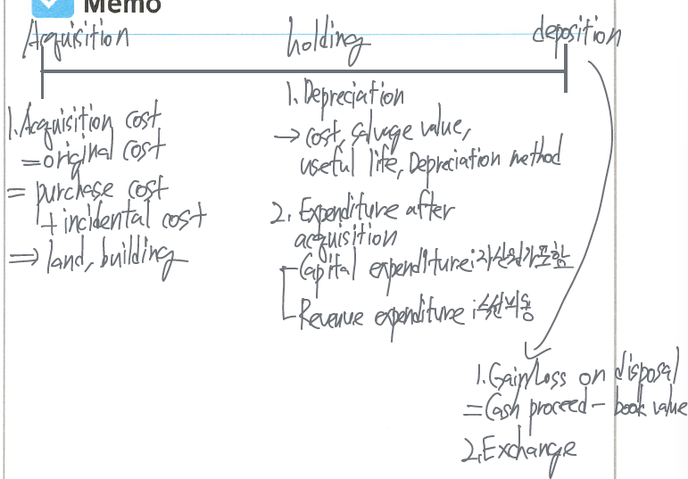

Property, Plant, Equipment

Property, plant, equipment
property = land / plant = building / equipment = other tangible asset
The characteristics of plant assets
- tangible resources that are used in the operations & are not intended for sale
- possess physical substance ↔︎ intangible assets
long-term in nature ⇒ depreciation
Determining the cost of plant assets → historical cost
US GAAP는 PPE의 revaluation을 인정하지 않지만 IFRS는 PPE와 intangible assets에 대하여 fair value를 재측정하는 revaluation model을 인정하고 있다.
Cost includes all expenditures to acquire and make it ready for intended use
Historical cost - measured by the cash or cash equivalent price of (obtaining the asset + brining it to the location and condition necessary for its intended use)
acquisition costs = purchase price + freight-in, installation costs, sales taxes, commission fee, etc.


PPE의 분류
Property (land)
purchase price + closing costs (매매종결 비용 등), brokers’ commissions, legal fees, clearing, draining, grading, net removal cost (철거비용, demolition & removal costs - proceeds from salvaged materials), all costs incurred up to excavation for the new building, etc.
Land improvements (토지개량자산)
walkaways, driveways, side walks, parking lots, fences, water system, etc.
토지와 달리 사용기간이 제한 (definitive lives)되어 있으므로 매기 감가상각한다.
Plant (buildings)
purchase price + closing costs, commission, architects’ fees, building permits, excavation costs, interest costs (limited to the construction costs), digging a hole for the foundation → stores, offices, warehouse, etc.
equipment
office furniture, machinery, fixture, delivery equipment, etc.
purchase price + sales taxes, freight-in charges, insurance during transit, assembling, installing, testing costs etc.
Depreciation - matching principle
The allocation of cost to expense over its useful life in a rational & systematic manner
A process of cost allocation, not a process of asset valuation.

components
- original cost
- salvage value - An estimated of the asset’s value at the end of useful life → 모든 감가상각 방법들은 자산의 book value가 expected salvage value와 동일할 때까지 계속 감가상각한다.
- depreciable cost = original cost - salvage value = 감가상각 적용대상 금액
- useful life - an estimated of the expected productive (Service) life
- depreciation method - straight-line method, unit of activity method, decreasing charge method (sum-of-the-years’-digits method, declining balance method) etc.
변경 가능 → 회계추정의 변경 (change of accounting estimate)
| changes in accounting estimate | changes in accounting principle | |
|---|---|---|
| approach | prospective approach | retrospective approach |
| examples | depreciation method, useful life, salvage value | inventory pricing: FIFO ⇒ LIFO |
Changes in accounting estimate is reflected in current and future F/S, not in prior statement.
Depreciation methods
정률법은 not for US GAAP (감가상각비 = 금액 * 상각률)
Straight-line method - passage of time
유형자산의 내용연수 동안 동일한 금액을 매년 감가상각비로 인식하는 방법
\[ \text{depreciation expense} = (\text{original cost} - \text{salvage value}) \times \frac{1}{\text{useful life}} \]
unit-of-production (activity) method
감가상각을 자원이나 자산의 사용량이나 투입량의 관점에서 파악
\[ \text{Depreciation expense} = (\text{original cost} - \text{salvage value}) \times \frac{\text{units of this year}}{\text{total estimated units}} \]
Declining-balance method - accelerated-depreciation method
자산의 사용의 초기에 많이 감가상각하고 후기에 적게 감가상각하는 방법
자산의 book value가 감가상각이 진행됨에 따라 감소하며 depreciation rate는 매기 일정한 방법
가장 일반적으로 double declining balance method (이중체감법)을 사용 - declining balance rate is double the straight line rate
\[ \text{depreciation expense of double declining method} = \text{book value at beginnin of year} \times \frac{2}{\text{useful life}} \]
sum-of-the-years’-digits method (SYD, 연수합계법)
자산 사용의 초기에 많이 감가상각하고 후기에 적게 감가상각하는 방법
denominator - the sum of the years, remains constant year by year
numerator - the number of years estimated remaining life as of the beginning of the year
\[ \text{depreciation expense} = (\text{original cost} - \text{salvage value}) \times \frac{\text{estimated life remaining as of the beginning of the year}}{\text{sum of the years' digits}} \]


Expenditures during useful life
revenue expenditure
Additional costs that do not materially increase the asset’s useful life.
maintain efficiency or normal good operating condition → ordinary repairs, cleaning, repainting, adjustments, replacement of worn-out gears on machinery.

capital expenditure
additional costs that provide benefits extending beyond the current period.
Increase of efficiency - productive capacity, expected useful life or cost reduction → extraordinary repairs, additions, improvements, plant expansion

disposal
types - sale, retirement, exchange


Exchanging of non monetary assets
with commercial substance - 교환으로 취득하는 자산의 취득원가는 the FV of the asset surrendered, G/L recognized
- commercial substance - 교환의 결과로 미래현금흐름의 변화가 발생하는 것
Gain or loss = FV of the assets given up - BV of the assets given up
Acquisition cost = FV of the assets given up + cash paid - cash received
natural resources accounting
depletion - natural resource의 acquisition cost를 rational and systematic manner로 resource’s useful life동안 cost allocation하는 과정
depletion method - 일반적으로 unit of production (activity) method
Depletion base = acquisition costs - salvage value
\[ \text{depletion expense} = (\text{original cost} - \text{salvage value}) \times \frac{\text{number of units extracted this year}}{\text{total unit of capacity}} \]
감모상각 대상 - timbers, oil, gas, minerals